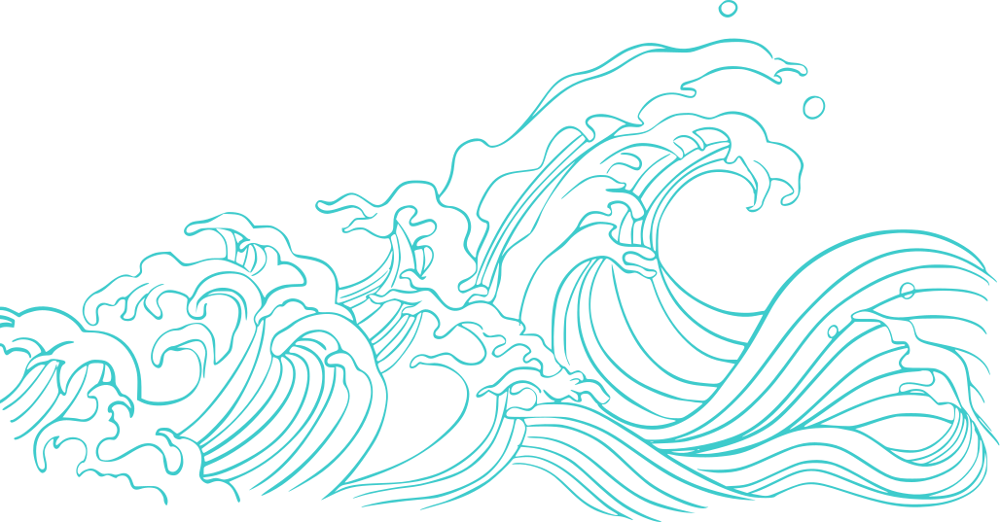

Психолог-консультант
Белова Юлия
Ваш проводник к внутреннему спокойствию и уверенности

Обо мне

Обо мне
Здравствуйте! Я — Юлия, практический психолог, психолог-аддиктолог (работа с зависимостями), дипломированный специалист по методу PSY 2.0 с медицинским образованием.
В работе ценю честность и желание идти в глубину: пустую мотивацию не даю, только бережно и в рамках вашего запроса, расширяя видение.
С чем я помогу
справиться?

С чем я помогу
справиться?
Карьера и реализация, деньги, поиск себя, состояние и уровень энергии, отношения с партнером, вопросы здоровья и психосоматики
Тело:
Освобождение от зажимов, телесных реакций, бережное выстраивание здоровых привычек без насилия над собой.
Эмоции:
Понимание состояния тревоги, выгорания, вины: для чего они приходят и как их регулировать.
Сложные случаи:
Работа с симптомами, которые «не лечатся» медициной (аллергии, ЖКТ, постоянные физические травмы).
Как я работаю
Подбираем методику под ваш уникальный запрос, чтобы путь к результату был максимально комфортным:
EMDR (ДПДГ)
Деликатная и быстрая проработка травм, фобий и навязчивых мыслей.
Метод PSY 2.0
Работа через ощущения, симптом, реакцию, внесение нового эволюционного шаблона через регрессивную шкалу.
МАК-карты
Мягкий способ заглянуть в подсознание, найти ответы и скрытые ресурсы, когда трудно подобрать слова.
Ваш путь к изменениям
Первая встреча
Напишите мне — я бесплатно отвечу на вопросы и помогу выбрать формат
Целостный разбор
Смотрим на тело, эмоции, контекст жизни
Выбираем маршрут
Подбираю методику терапии под ваш уникальный случай
Идём в вашем ритме
Встречи 1–2 раза в неделю или раз в месяц. Без спешки и давления
Фиксируем изменения
Отслеживаем прогресс — от «стало легче дышать» до «изменились отношения»